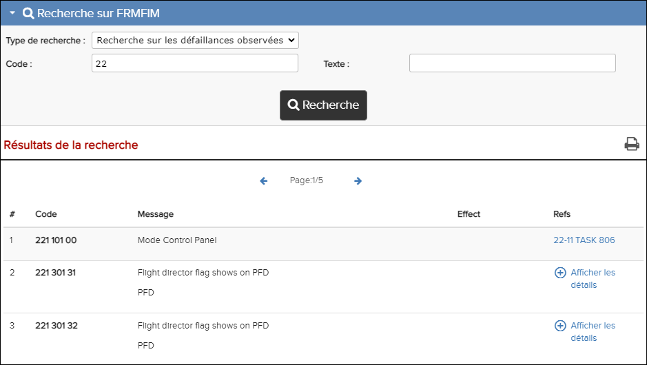

Rechercher sur fautes observées une catégorie dans la Rechercher sur FRMFIM. Pour plus de détails, voir Fenêtre de recherche FRMFIM.
-
Cliquez sur le bouton Recherche, ou appuyez sur la
touche Entrer de votre clavier, pour lancer la recherche.
Les résultats de votre recherche apparaîtront dans la rubrique Résultats de recherche.
Si vous suivez un lien hypertexte dans la colonne Refs, la tâche associée s'affichera.
Si plusieurs tâches sont associées aux résultats Code ou Texte, cliquez sur
 dans la colonne Refs
pour les afficher. Cliquez sur l'un des hyperliens de tâche dans la colonne
Refs pour ouvrir la tâche.
dans la colonne Refs
pour les afficher. Cliquez sur l'un des hyperliens de tâche dans la colonne
Refs pour ouvrir la tâche.Cliquez
 dans la colonne
Refs pour masquer les tâches.Dans la zone Résultats de la recherche, cliquez sur l'icône
dans la colonne
Refs pour masquer les tâches.Dans la zone Résultats de la recherche, cliquez sur l'icône
Rechercher sur fautes observées
 Imprimer les résultats de la recherche pour imprimer les
résultats de la recherche au format PDF.
Imprimer les résultats de la recherche pour imprimer les
résultats de la recherche au format PDF.